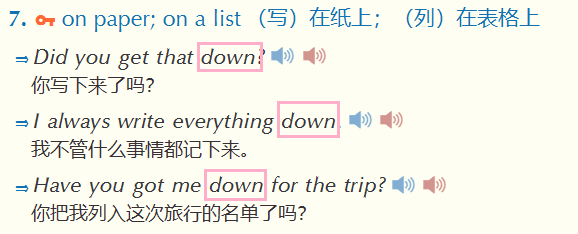

有朋友问我 ，Markdown 的效果 用Word 完全可以复现，甚至功能更多，那为何要用 Markdown 呢？
答：
MD的优势：
用 Markdown 写东西，记住一个原则
能用10个字搞定的，绝不用11个字
经常使用 Markdown 书写的朋友，也许会有一种奇妙的感触
关于标识符的滥用
这个其实是写在最后的，之所以放在这里，是因为它很重要！
如果你有一定的MD语法基础，可以直接[[#19 避免标识符的滥用|点击跳转]]
这是一段普通的文本
# 这是一级标题
## 这是二级标题
### 这是三级标题
#### 这是四级标题
##### 这是五级标题
###### 这是六级标题
* + 文本内容 + *_ + 文本内容 + _ ( 下划线 )这是一段普通文本
*这里是一段斜体文本*
_这也是一段斜体文本_
这是一段普通文本
这里是一段斜体文本 这也是一段斜体文本
粗体 的格式：
** + 文本内容 + **__ + 文本内容 + __ (这里是两个 _ )说明：
这是一段普通文本
**这里是一段加粗文本**
__这也是一段加粗文本__
这是一段普通文本
这里是一段加粗文本 这也是一段加粗文本
粗斜体 的格式：
*** + 文本内容 + ***___ + 文本内容 + ___ （ 这里是3个 _ )**_ + 文本内容 + _**__* + 文本内容 + *__*__ + 文本内容 + __*_** + 文本内容 + **_说明：
这是一段普通文本
***粗斜体文本1***
___粗斜体文本2___
**_粗斜体文本3_**
__*粗斜体文本4*__
*__粗斜体文本5__*
_**粗斜体文本6**_
这是一段普通文本
粗斜体文本1 粗斜体文本2 粗斜体文本3 粗斜体文本4 粗斜体文本5 粗斜体文本6
斜体中包含粗体 的格式：
* + 斜体文本 + ** + 粗体文本 + ** + 斜体文本 + *_ + 斜体文本 + __ + 粗体文本 + __ + 斜体文本 + _ （ 这里是两个 _ )* + 斜体文本 + __ + 粗体文本 + __ + 斜体文本 + *_ + 斜体文本 + ** + 粗体文本 + ** + 斜体文本 + _说明：
这是一段普通文本
*这里是一段斜体中**包含粗体**的文字*
_这也是一段斜体中**包含粗体**的文字_
*这又是一段斜体中__包含粗体__的文字*
_这还是一段斜体中**包含粗体**的文字_
这是一段普通文本
这里是一段斜体中包含粗体的文字 这也是一段斜体中包含粗体的文字 这又是一段斜体中__包含粗体__的文字 这还是一段斜体中包含粗体的文字
** + 粗体文本 + * + 斜体文本 + * + 粗体文本 + **__ + 粗体文本 + _ + 斜体文本 + _ + 粗体文本 + __ （ 这里是两个 _ )** + 粗体文本 + _ + 斜体文本 + _ + 粗体文本 + **__ + 粗体文本 + * + 斜体文本 + * + 粗体文本 + __这是一段普通文本
**这里是一段粗体中*包含斜体*的文字**
__这也是一段粗体中_包含斜体_的文字__
**这又是一段粗体中_包含斜体_的文字**
__这还是一段粗体中*包含斜体*的文字__
这是一段普通文本
这里是一段粗体中包含斜体的文字 这也是一段粗体中_包含斜体_的文字 这又是一段粗体中_包含斜体_的文字 这还是一段粗体中包含斜体的文字
* 或 - 组成下面是一条水平分割线：
---
***
~~ + 文本内容 +~~ 首尾各加两个 ~ 波浪号~~这是一段加了删除线的文本~~
这是一段加了删除线的文本
<u> + 文本内容 + </u><u>这是一段加了下划线的文本</u>
这是一段加了下划线的文本
有序列表 的格式：
1. + 空格 + 文本内容说明：
1. 这是第一个有序列表 <!-- (Enter) -->
2. 这是第二个有序列表 <!-- (Enter) -->
3. 这是第三个有序列表
1. 这是第一个有序列表 <!-- (Shift + Enter) -->
这是同个列表下，另起一行的文本内容 <!-- (Enter) -->
2. 这是第二个有序列表 <!-- (Shift + Enter) -->
这是同个列表下，另起一行的文本内容
这是第一个有序列表
这是第二个有序列表
这是第三个有序列表
这是第一个有序列表 这是同个列表下，另起一行的文本内容
这是第二个有序列表 这是同个列表下，另起一行的文本内容
数字 + . + 内容- 10.这是无序列表下，整十数排列的内容
- 20.这是无序列表下，整十数排列的内容
- 30.这是无序列表下，整十数排列的内容
- 100.这是无序列表下，整百数排列的内容
- 200.这是无序列表下，整百数排列的内容
- 300.这是无序列表下，整百数排列的内容
效果：
- 这是第1个无序列表 <!-- (Enter) -->
- 这是第2个无序列表 <!-- (Enter) -->
- 这是第3个无序列表
- 这是第一个无序列表 <!-- (Shift + Enter) -->
这是同个列表下，另起一行的文本内容
- 这是第二个无序列表 <!-- (Shift + Enter) -->
这是同个列表下，另起一行的文本内容
>这是第一段引用文本的第1行 <!-- (Enter) -->
>这是第一段引用文本的第2行 <!-- (Enter) -->
<!-- (Enter) -->
>这是第二段引用文本的第1行 <!-- (Enter) -->
>这是第二段引用文本内第2行
这是第一段引用文本的第1行 这是第一段引用文本的第2行
这是第二段引用文本的第1行 这是第二段引用文本的第2行
在列表和引用的书写过程中，我们需要利用 ==缩进== 与 ==退格== ，让文章肌理分明，更具层级
缩进：
退格：
1. 第一级有序列表1 <!-- (Enter) -->
(前面空3格)1. 第二级有序列表1 <!-- 写文本之前，先敲3个空格 ) ；写完文本后，再(Enter) -->
2. 第一级有序列表2 <!-- (Enter) -->
"提示信息文本" 是可选项，一般不会填鼠标左键点击 才可跳转链接，不过也有 直接鼠标点击 就能跳转的[显示文本内容](链接地址 "提示信息文本")
[百度一下，你就知道](http://www.baidu.com "按住Ctrl点击跳转百度")
示范：
! 代表 可见" " 内[ ] 方括号里的文字信息在 Markdown 没啥实质的作用，只是方便在源代码模式下，知道这个图片是什么，在渲染界面是不会显示的。有点类似于HTML img标签 里的 alt属性。

补充：
Ctrl + C 黏贴，Ctrl + V 复制 就可以style="zoom: %;" ，这里数值可以自己修改![[图片名]]
![[图片名|宽度数值]]
- 若想自主调整图片宽高，则用：
- ![[图片名|宽度数值x高度数值]]
- #提示 这里的 x 是 英文字母xCtrl + T 即可快速插入表格，自由定义样式|这里是表头1|这里是表头2|这里是表头3|
|:-|:-:|-:| <!--区分表头和表格主体，:代表文本对齐方式，分别是左对齐，居中对齐，右对齐-->
|单元格数据1|单元格数据2|单元格数据3|
|单元格数据4|单元格数据5|单元格数据6|
| 这里是表头1 | 这里是表头2 | 这里是表头3 |
|---|---|---|
| 单元格数据1 | 单元格数据2 | 单元格数据3 |
| 单元格数据4 | 单元格数据5 | 单元格数据6 |
如下图所示：
| 表头1 | 表头2 |
|---|---|
| 这是一段很长很长很长很长很长很长很长很长很长很长很长很长很长很长的文本 | 普通文本 |
<br> （ 换行标签 )| 表头1 | 表头2 |
|:-:|:-:|
|这是第一行文本<br>这是另起一行的文本|普通文本|
| 表头1 | 表头2 |
|---|---|
| 这是第一行文本 这是另起一行的文本 |
普通文本 |
任务列表 的格式：
[ ] +空格 + 任务列表内容 ( 中括号[ ] 里面必须有个空格)√ ，变成 已办
√ ( 例如 Obsidian )补充：
Ctrl + Enter ，即可生成一个待办列表
Ctrl + Enter ，会在待办列表 打 √格式：
- [ ] 待办任务列表1
- [ ] 待办任务列表2
- [x] 已办任务列表1 <!-- 英文字母X -->
- [x] 已办任务列表2
- + 空格 + Ctrl + Enter +待办文本内容Ctrl + enter )
这是一段普通文本
<small>这是一段缩小文本</small><small>*这是一段缩小斜体文本*</small>*<small>这是一段缩小斜体文本</small>***<font color=teal>这是一段加粗的水鸭色文本</font>**
<font color=teal>**这是一段加粗的水鸭色文本**</font>
<strong style="color:teal;">这是一段加粗的水鸭色文本</strong> (标记略复杂，不是很推荐)** 换成 * 即可*<font color=teal>This is an italic teal text</font>*
<font color=teal>*This is an italic teal text*</font>
******<font color=teal>This is a bold italic teal text</font>***
<font color=teal>***This is a bold italic teal text***</font>
#注意 多彩文本尽量慎用，Markdown 的核心就是 简洁精炼，注重 实质内容，而非花哨的 颜色样式
==这里是一段高亮文本==x^2^<sup>这里是上标内容</sup>X<sup>2</sup>H~2~O<sub>这里是下标内容</sub>H<sub>2</sub>O